网页图像格式
三种常用的网页图像格式
JPG/JPEG- JPEG可支持多达16M颜色，展现色彩丰富生动的图像
- 可支持图像压缩保存，压缩质量可选。但压缩比越高，图像质量损失越大
GIF格式
- 8位存储格式的限制，最多只能是256色
- 压缩比高，文件通常较小，网页打开速度快
- interlaced模式的gif图像以渐显方式呈现，从轮廓到细节，适应人们一般的观赏心理
- 可存储多幅静止图象，展示为二维动画效果。可使图像呈现背景透明的效果
| 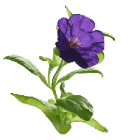 | 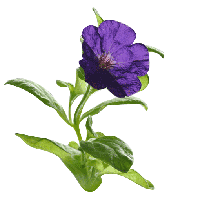 | 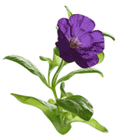 |
| 200×200 Gif 64色， 6.8K | 200×200 Gif 64色 透明，7.38K | 200×200 Gif 128色，40.3K |
PNG
- 兼有gif和jpg的色彩模式
- 256色以下的index color色彩模式（PNG-8）
- 24位真彩模式（PNG-24）
- png采用最大限度的无损压缩处理图像，利于网络传输，同时保持图像品质
- png图像也可以interlaced模式保存，得更优化的传输显示
- 支持图像透明显示，提供了多层次透明，
| 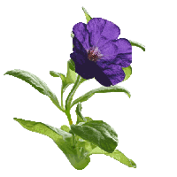 | 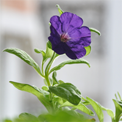 | 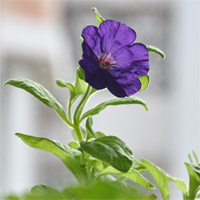 | |
| 200×200 PNG-8， 6.52K | 200×200 PNG-24，28.58K | 200×200 PNG-24，69.97K | 200×200 JPeg高质量,13K |
对比和选择
网页中加入图像
加入图像前的准备
- 在网页制作前寻找、拍摄或处理图像，并将图像文件归类存放（如常见的“images”文件夹）；
- 图像的多少与大小需兼顾网页浏览的30秒原则；
- 网页中加入图像前，先保存网页到合适的文件夹，必须以相对路径的方式表达图像位置。
加入图像到网页
- 插入->图像（Ctrl+Alt+I）
- 插入面板（常用-图像:图像）
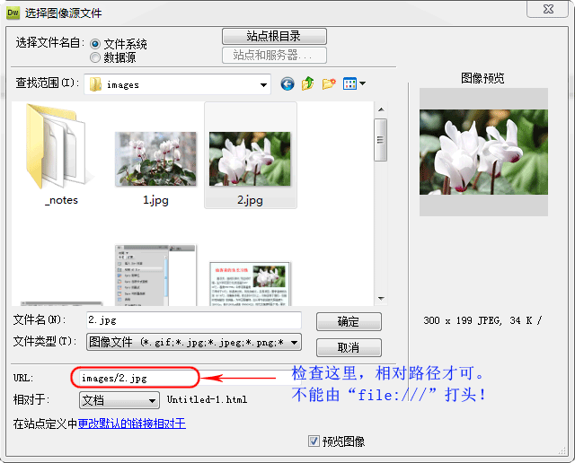
图像的设定
在属性面板进行图像设置：
- 图片的宽和高：直接输入精确值，也可对图像拖动；
- 替代文字：图片不存在时显示的文字；
- 图像的链接：站内链接，直接按层次给出网页文件；站外链接，应由“http://”打头；
- 给图像加边框：输入边框像素；
- 图像处理：剪裁、亮度对比度、锐化、重新取样（慎）；
- 图文混排设定：从经验来说，“左对齐”和“右对齐”的文字图片混排方式不错！
例：用div+css制作简单的图文混排。
| 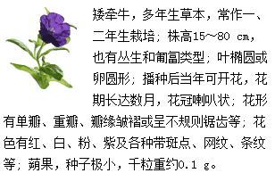 | 网页代码： <div class="purple"> |
- purple需设定：盒子宽度、外间距、内间距、文字字体（尺寸）、行高等。
img标签及其属性
img标签基本格式<img src="图像文件url" alt="替代文本" />
说明：src和alt是img标签必需的属性。
对应的html代码是： <img src="images/2.jpg" alt="Cyclamen" /> |
img标签常用属性
align：top|bottom|middle|left|right，图文排版方式。
border：像素值，定义图像周围的边框。
height： 像素值或百分比，定义图像的高度。
hspace： 像素值，定义图像左侧和右侧的空白。
vspace： 像素值，定义图像顶部和底部的空白。
width： 像素值或百分比，设置图像的宽度。
练习1：用div+css制作简单的图文混排（混排样式参考如下图）。
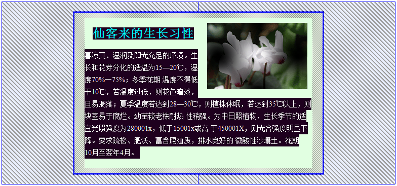
图像对象与图像翻转
加入图像占位符
- 插入->图像对象->图像占位符
- 插入面板->图像:图像占位符
|
<img src="" alt="图像占位" name="image1" width="400" height="200" id="image1" style="background-color: #00CC00" />
鼠标经过图像
鼠标经过图像：当鼠标指针经过一幅图像时，图像的显示会变为另一幅图像。
插入->图像对象->鼠标经过图像
|
多样边框与线条绘制
CSS设置的边框效果可以对图像也可以对文字，此处借图像展开说明。
图片边框的设置
| 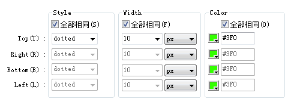 |
|
线条的绘制
水平线
- 用hr+css即可绘制水平线，如： <hr style="border-top:1px dotted blue;"/>
- 用div+css同样可绘制更细的水平线：<div style="border-top:1px dotted red;"></div>
- 重复的背景图也可形成分隔：<div style="background: url(images/rose1.png) repeat-x; height:35px"></div>
垂直线
- 用td+css可绘制特定列的左或右边框的垂直线，其高度同列的高度
- 用div+css同样可绘制垂直线，其高度同div的高度
练习2：绘制水平线与垂直线，认识与体会各种线型。
图文混排的网页制作
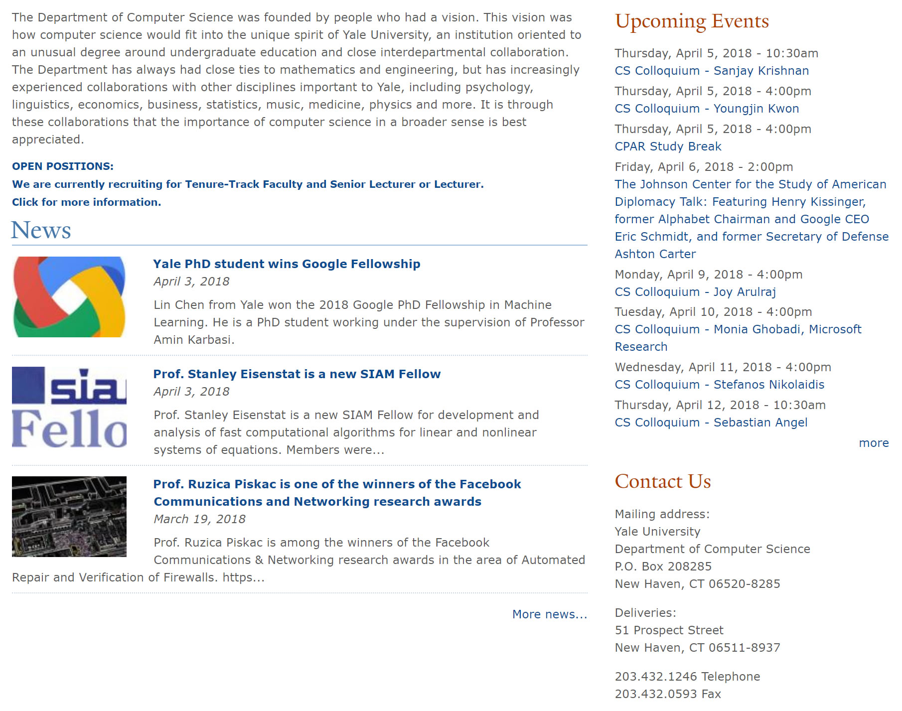
规范格式
- 正文字体为：Verdana, Geneva, sans-serif，13px；
- News、Upcoming Events、Contact Us的英文字体为Times New Roman，28px；
- 正文文字颜色为#585858；
- 页面的链接颜色为：#0e4c92，鼠标经过时的颜色为：#2a9fe4；
- 水平线条齐宽，第一根为实线，其它为点划线；
- 垂直线条不顶上下边，与水平线保持一点距离；
- 图片与文字以可环绕的方式混合排版，图片置左；
- 有效宽度为1008px，第一列宽672px左右，余下像素为第二列的宽度；
- 设置合适的行间距和边距；
- 页面左边部分的链接呈粗体，右边部分及左的“more news...”链接呈正常字体，同颜色值；
- 概览页面应同被仿制网页在布局、内容、细节上大致相同。
| Last | Home | Next |
©2012-2018 Yang Peili. All rights reserved. contact me